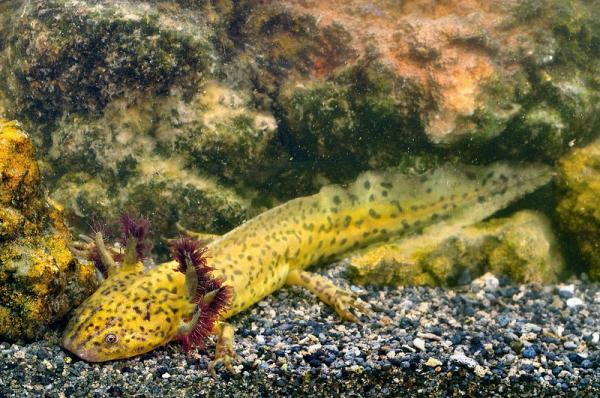

Ajolote de Alchicha

Imagen del ajolote
El Ajolote de Alchichica es una de las 17 especies endémicas de ajolotes que hay en México. Esta especie tiene la particularidad de vivir a gran profundidad en una laguna-cráter con un alto contenido de sales.
Caracteristicas generales
- Descripcion
- Habitat y caracteristicas
- Alimentacion
Datos mencionados
- Descripcion
- Color pardo con manchas negras
- Cada patrón de esas manchas es distinto, no hay dos iguales
- Sus branquias (o corales, siguiendo la analogía de Cortázar) son de un color más oscuro, grisáceo a primera vista
- Es une especie de tamaño medio, longitud total aprox. 176 mm
- Cabeza un poco más ancha que larga, miembros relativamente largos y dedos cortos
- Cola corta aproximadamente al 65% del tamaño del cuerpo
- Dientes premaxilares en número de 54 a 58
- Dientes vomerianos separados de los pterigoideos, aparentemente continuos sin una diastema central
- Habitat y caracteristicas
- MEXICO / PUEBLA / TEPEYAHUALCO
- Actualmente se encuentra presente en la Laguna de Alchichica, en el Municipio de Tepehuayo, en el Estado de Puebla
- En aguas salobres profundas
- Habita en climas semiseco templado, el porcentaje de precipitación invernal respecto al total anual menor 5 mm, temperatura media anual menor de 18 con poca oscilación entre 5 y 7 ° C, dos máximos de lluvias separados por dos estaciones secas una larga en la mitad fría del año y una corta en la mitad de la temporada lluviosa
- Alimentacion
- Charales
- Insectos
- Moluscos